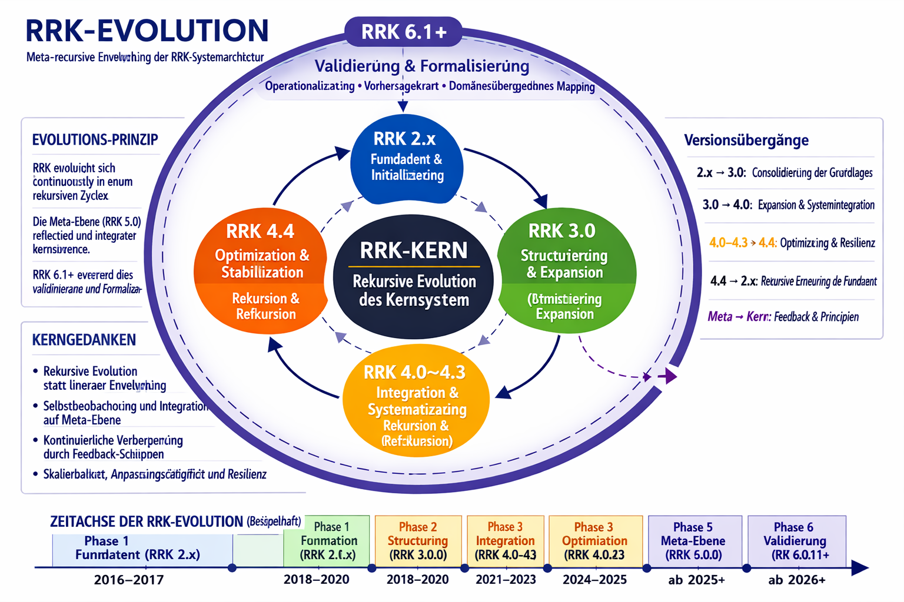

RRK‑Evolution
Meta‑rekursive Entwicklung der RRK‑Systemarchitektur

RRK entwickelt sich in einem rekursiven Zyklus zwischen Kern und Meta‑Ebene weiter.
Version 5.0 integriert Reflexion, Integration und Rekursion als übergeordnete Schleife.